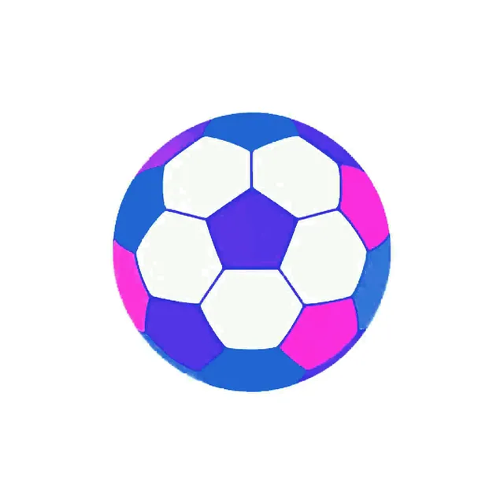
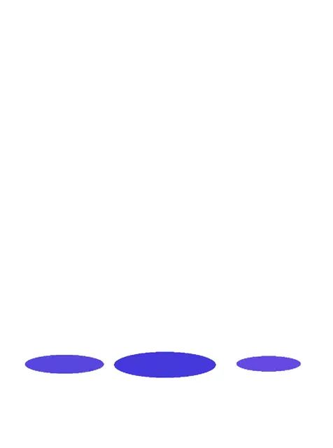

החלום שלך מתחיל כאן
כל מה שתמיד רצית להרגיש
נמצא במרחק נקודות
-
בוחרים חלום ומשריינים
חופשה, הופעה או משחק שתמיד רציתם!
בוחרים מועד ומשריינים במקדמה
20% מקדמהמהסכום הסופי, והחלום שמור לכם למועד שבחרתם
-
צוברים נקודות עד לחלום
משתמשים בכרטיס אשראי FlyAll וצוברים נקודות עד המועד שנקבע

1 נקודה = ₪1ככל שתצברו יותר נקודות ככה תשלמו פחות בסוף
-
משלימים את היתרה ומגשימים
משלימים את היתרה בנקודות, בכסף או גם וגם, ויוצאים להגשים את החלום
עד חודשיים לפני המועדמסיימים את התשלום ויוצאים לדרך
עם הנקודות שלך, גם הדרך הופכת לחוויה.
העברה VIP
₪390 או 390 נק׳
טרקלין Premium
₪180 או 180 נק׳